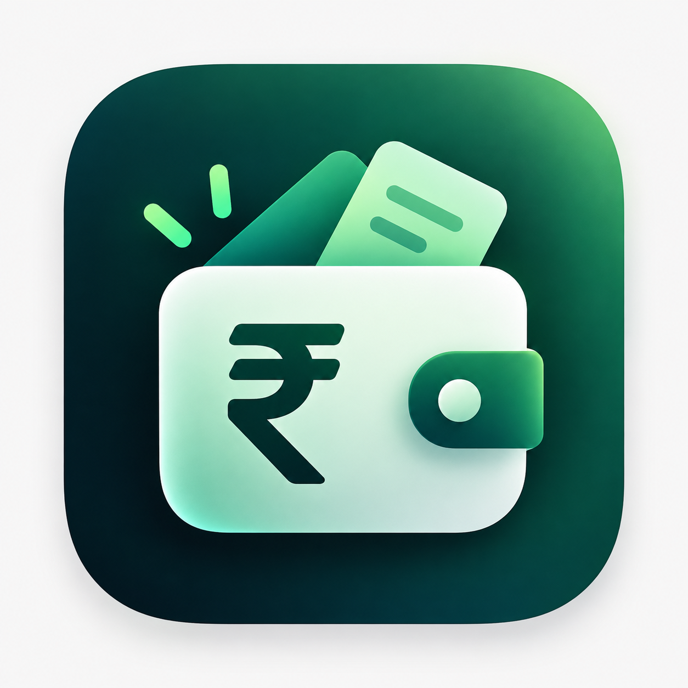

ANDROID
Native Android app
Download the Pocket Ledger APK for quick entry, a home-screen widget, launcher shortcut, and Quick Settings tile.
Download Android app
Pocket LedgerPRIVATE EXPENSE ENTRY
Pocket Ledger helps you capture an expense quickly on Android or iPhone, then save it to a Google Sheet you control.
Your template copy lives in your Google Drive. Your expense data is sent to your own Apps Script endpoint.
CHOOSE YOUR WAY IN
ANDROID
Download the Pocket Ledger APK for quick entry, a home-screen widget, launcher shortcut, and Quick Settings tile.
Download Android appIPHONE
No separate iOS app is needed. Install the supplied Shortcut and configure it with your own Apps Script Web App URL.
Get iPhone ShortcutGOOGLE SHEETS
Make a private copy of the master template in your own Google Drive, then connect it to Pocket Ledger.
Make your copySETUP, WITHOUT THE GUESSWORK
Download the Android app or get the original iPhone Shortcut.
Use the copy link to place the template in your own Google Drive.
Add the included script to your copied Sheet and deploy your personal Web App endpoint.
Paste your own Web App URL into the Android app or configure the iPhone Shortcut.
Confirm the connection before adding your daily expenses.
KEEP THE GUIDES HANDY
Use the setup guide for your copied Sheet and deployment flow. The Apps Script file is included unchanged for your personal deployment.